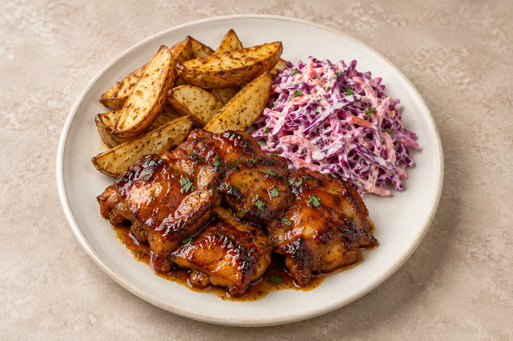

Panda Express Orange Chicken
Includes the sauce, chicken and egg-fried rice.
Estimated total: About 1 hr 45 min–2 hr totalIncludes making the glaze from scratch, then roasting the chicken and wedges.

Make your original sauce first. Scale it using the sauce ingredients below.
Best freshly cooked. Cool leftovers, refrigerate covered within 2 hours and use within 48 hours. Keep sauce and cold garnishes separate where possible. Keep coleslaw chilled separately; do not warm it with the chicken.
Freeze cooled cooked chicken, glaze and potato wedges separately in labelled containers for up to 2 months for best quality. Make or buy fresh coleslaw when serving. The wedges will be less crisp after thawing.
Reheat the meat once on a tray in an oven at 180°C / 160°C fan until steaming hot throughout. Turn as needed; add sauce only at the end. Microwaving softens the coating. The sugary glaze can burn: heat chicken fully first, then brush with heated glaze at the end.
Keep chicken breast as the meat. Replace whiskey with pineapple juice for an alcohol-free glaze and check the teriyaki sauce. Use sweet potato wedges instead of ordinary potatoes, adjusting cooking time.
Cool cooked leftovers in small portions and refrigerate within 2 hours. Keep the fridge at 0–5°C and the freezer around −18°C. Freeze suitable leftovers promptly. Defrost fully in the fridge and use within 24 hours. Reheat only once, until steaming hot all the way through. Follow any shorter use-by or opened-pack instructions; using older cooked ingredients does not restart their storage time.
Food-safety guidance: Food Standards Agency: chilling and freezing · reheating leftovers.